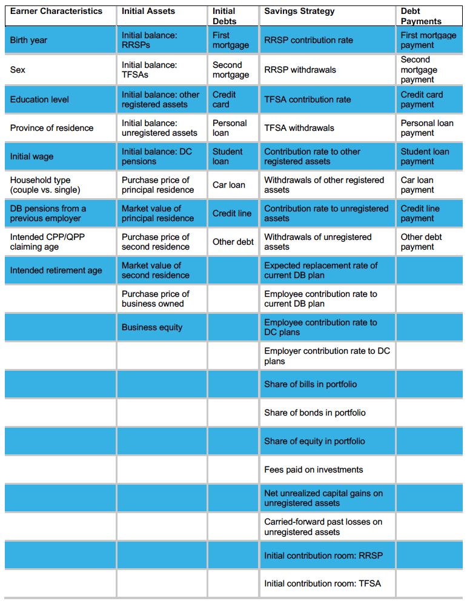

Initialisation¶
Ce module configure des ménages et leur attache des actifs et des dettes. Le tableau ci-dessous montre tous les intrants individuels au CPR (certains sont entrés dans d’autres modules).
Bien qu’un fichier exemple d’intrants soit fourni avec le package, un tutoriel est également offert afin de montrer aux utilisateurs comment modifier ces intrants afin d’utiliser ceux de leur choix. NOTE: il faut être prudent lorsque l’on utilise ses propres intrants, car un message d’erreur général sera généré si l’un des – nombreux – intrants est spécifié de manière incorrecte (c.-à-d. qu’il contient une erreur ou est très peu plausible).
-
CPR.initialisation.create_hh(index, d_hh, common, prices)¶ Fonction qui crée un ménage avec une ou deux personnes et y attache des actifs et des dettes.
-
class
CPR.initialisation.Person(d_hh, l_sp, common, prices, s_=False)¶ Cette classe crée une personne.
- Paramètres
d_hh (dict) – dictionnaire contenant toutes les informations à propos des ménages
l_sp (list) – liste des caractéristiques attachées aux conjoints
common (Common) – instance de la classe Common
prices (Prices) – innstance de la classe Prices
s_ (bool) – Faux pour le chef de ménage, Vrai sinon
-
create_wage_profile(common, prices)¶ Fonction qui crée des profils de salaires pour chaque réalisation de l’incertitude, utilisée lorsque la version stochastique de l’outil est sélectionnée.
- Paramètres
common (Common) – instance de la classe Common
prices (Prices) – innstance de la classe Prices
- Renvoie
Profils de salaires.
- Type renvoyé
np.array
-
class
CPR.initialisation.Hhold(d_hh, l_hhold, index, common, p0, p1=None)¶ Cette classe crée un ménage.
- Paramètres
d_hh (dict) – dictionnaire contenant toutes les informations à propos des ménages
l_hhold (list) – liste de caractéristiques attachées au ménage
index (int) – indice du ménage
common (Common) – instance de la classe Common
p0 (Person) – premier conjoint
p1 (Person) – deuxième conjoint (pour les couples)
-
set_other_years(common)¶ Fonction qui fixe les années de retraite partielle et complète (pour les couples) ainsi que les années dans lesquelles la consommation avant et après la retraite sont évaluées.
- Paramètres
common (Common) – instance de la classe Common